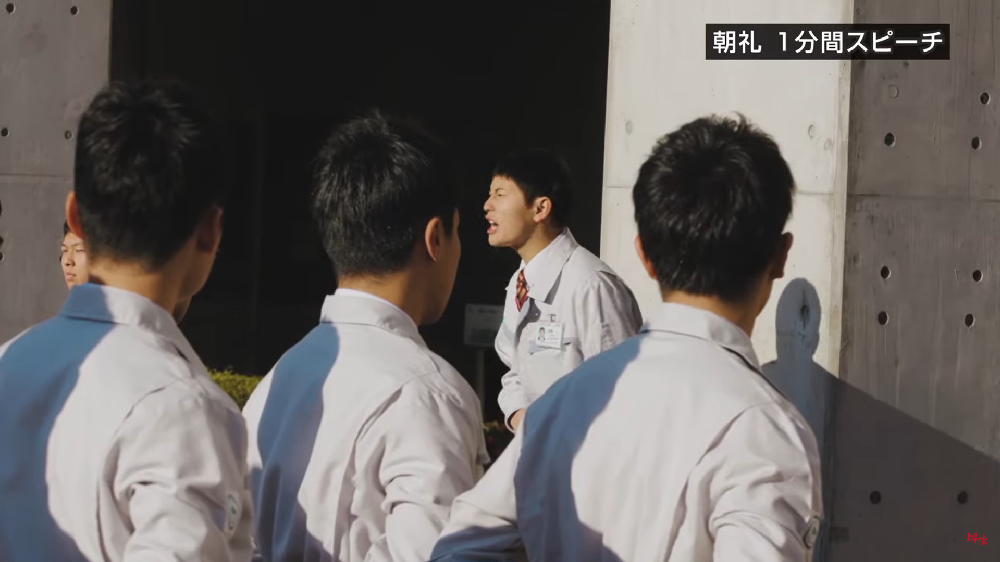
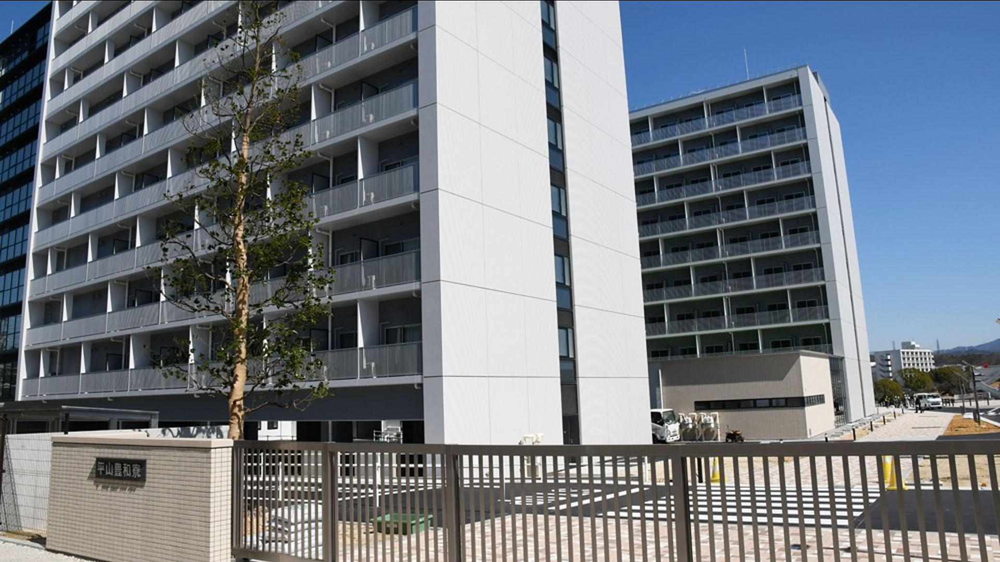
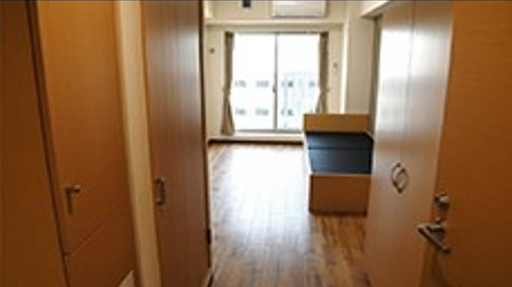
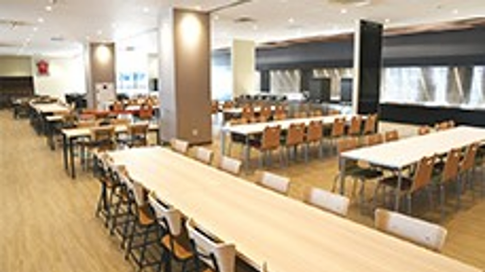

TOYOTA TECHNICAL SKILLS ACADEMY
トヨタ工業学園
作：outsider Team
HOME
学校紹介
年間行事
Topic
作成者

トヨタ工業学園 住所
〒470-0344
愛知県豊田市保見町井ノ向57-28
トヨタスポーツセンター内
TEL：（0565）43-3210
FAX：（0565）43-3199
学園とは
『モノづくりのプロを目指す』
3年間のカリキュラムを通して、社会人・企業人としての基礎や、約2,000時間もの技能教育で、トヨタのモノづくりの基礎を学びます。
・工業高校機械科の卒業資格
・トヨタのモノづくりの技が身につく
・たくさんの資格が取れる
・社会人の基礎・基本が身につく



学園寮 住所
〒471-0826
愛知県豊田市トヨタ町５３０
平山豊和寮
TEL： (0565) 24-2590
学園寮とは?
男性・女性ともに個室。女性は女性専用棟に入寮します。
エアコン・専用デスク・ベッド・洗面台・クローゼットを完備しています。
共同施設に食堂・大浴場、各フロアには洗濯機・乾燥機を完備しています。
 トヨタ工業学園
トヨタ工業学園